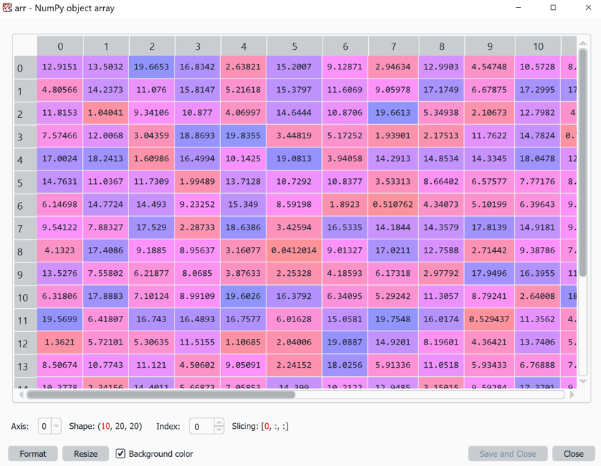

17. Numerical Data in Python with NumPy - Part 2#
We have now looked at some basics with Numpy. The main focus was on creating Numpy arrays and slicing to get the desired entries from the arrays. In doing so, some of the great advantages of Numpy have already been mentioned, e.g. Numpy arrays can be used to process very large (numeric) data arrays, including arrays with many dimensions (see .ndim). Numpy can also be used to efficiently create large amounts of random numbers from a wide range of distributions (numpy.random).
Here we will discuss some other very important and helpful functionalities of Numpy, including array sorting, finding specific values and high performance as one of Numpy’s core advantages.
But first, a good way to look at larger arrays (not yet as large as in “big data” , but already larger than print()).
17.1. Viewing arrays#
In practice, we often work with large, sometimes multi-dimensional Numpy arrays. This takes some getting used to at the beginning, also because our previous methods of viewing data (e.g. with print()) quickly reach their limits here.
As an editor, Spyder has an advantage here: the Variable Explorer is a great way to view Numpy arrays! Here is an example to try out the Explorer:
import numpy as np
arr1 = 20 * np.random.random((10, 20, 20))
In the Variable Explorer, we can only display 2D arrays, but we can select along which axis(es) a section is displayed (Axis) and with Index: we can select the respective plane.

Tip: Play around with the “Axis” and “Index” fields at the bottom of the Variable Explorer. This allows you to view this 3-dimensional array from different sides (axis).
Of course, this approach is also limited. For very large arrays, i.e. arrays with a very large number of elements (keyword: “big data”) and/or arrays with many dimensions, it will eventually become difficult even using the Variable Explorer in Spyder.
17.2. Sort!#
We already had the option of sorting the elements with the .sort() method in lists. So it’s no surprise that Numpy arrays also have a sorting method. In fact, there are many different sorting methods in NumPy!
First of all, we can sort arrays just like lists using .sort():
import numpy as np
arr = np.random.random(100)
arr.sort() # sort from small to large
print(arr)
You can also sort 2D (or even higher-dimensional) arrays with it, but the sorting is always only done along one axis:
import numpy as np
arr = np.random.random((20, 20))
arr.sort()
# or
arr = np.random.random((20, 20))
arr.sort(axis=0)
17.2.1. Argsort#
Another very important sorting method is argsort(). With this, Numpy calculates the indices that would sort all elements by size.
arr = np.array([6, 7, 8, 9, 3, 2, 3, 1, 0, 5])
order = np.argsort(arr)
print(f“The top 3 entries are number: {order[::-1][:3]}”)
The usefulness of argsort() will soon become clearer when we work with larger, more complex data. There, we don’t always want to sort an entire table to see the highest elements, but often we just want to know: Where are the 10 highest/lowest values in the table.
When we are dealing with multi-dimensional arrays, sort() and argsort() always refer to only one axis/dimension. The direction can be specified with the axis parameter for both functions, for example like this:
arr = np.arange(0, 100).reshape(20, 5)
sorted_idx = np.argsort(arr, axis=0)
But what if we want to sort all values in a 2D array according to size in just one “column”? Argsort basically offers the possibility to do this:
arr = np.random.random((20, 20))
# Sort indices of the first “row”
sorted_idx = np.argsort(arr, axis=1)
# To actually perform the sorting
arr_sorted = np.take_along_axis(arr, sorted_idx, axis=1)
But what if we want to sort by multiple columns/rows at the same time? We can use lexsort() for that.
17.2.2. Lexsort#
lexsort() allows us to sort an array along multiple values. And even though we’ve only used Numpy for numerical values so far, it works with other data types as well, such as strings:
surnames = ('Hertz', 'Galilei', 'Hertz')
first_names = ('Heinrich', 'Galileo', 'Gustav')
idx = np.lexsort((first_names, surnames))
print(idx)
But the numerical examples are still more common.
arr = np.array([[3, 2, 1, 2],
[5, 4, 3, 3]])
print(np.lexsort(arr))
Attention: Unfortunately, we can’t work with axis quite as easily with lexsort(). If we want to change the sorting direction here, it is better to change the array, e.g. to rotate it with np.rot90().
Alternatively, all the necessary
1D arrays can be passed as a tuple:
import numpy as np
arr1 = np.random.randint(0, 10, size=(100))
arr2 = np.random.randint(0, 10, size=(100))
sorted_idx = np.lexsort((arr2, arr1))[::-1]
print(arr1[sorted_idx[:10]])
print(arr2[sorted_idx[:10]])
17.3. Selecting/finding entries#
We have already seen one way to select values in a numpy array, namely using a mask, e.g.
arr = np.random.randint(0, 100, size=(10, 10))
# select using mask
mask = arr < 5
print(arr[mask])
# or: select and change
arr[mask] = 0
print(arr)
17.3.1. numpy.where#
Often, however, we want to get the exact indices (i.e. the positions in the array) for values that match our search criteria. This is possible with numpy.where, here is an example:
arr = np.random.randint(0, 100, size=(10, 10))
selected_idx = np.where(arr < 5)
print(selected_idx) # -> outputs the positions in the array that contain values <5.
17.4. Combining arrays#
In Numpy, it is possible to combine arrays, provided that their dimensions allow it.
On the one hand, this can be done using vstack, hstack, or dstack.
Another option is to use concatenate.
17.5. Calculations with Numpy#
Numpy arrays are the standard format in Python for working with large (numeric) data sets. So far, we have seen what basic functions/methods are available with Numpy arrays. But now a few examples to illustrate how and why these arrays are so useful in practice.
We will use another library for this: matplotlib, which is the most frequently used library in Python for plotting data.
(1) Calculating values with mathematical functions.
Numpy includes some mathematical functions, e.g. np.sin() (sine), np.cos() (cosine), np.exp() (exponential function) or np.log() (logarithm). A great many more options can be found in the SciPy library (https://scipy.org/), for example.
import numpy as np
from matplotlib import pyplot as plt
x = np.linspace(-10, 10, 500)
y = np.sin(x)
plt.plot(x, y, “darkblue”)
Here, 500 data points are generated with x-values evenly distributed between -10 and 10. The sine is calculated for each and then displayed graphically.
(2) Operations on many data points simultaneously + random numbers.
Numpy offers enormous possibilities for the use of random numbers. We had already learned about the random library before, but it could only generate one random number at a time. With Numpy, arrays of random numbers of any size can be created (for our purposes). In addition, Numpy offers many different types of random distributions!
import numpy as np
from matplotlib import pyplot as plt
xy = np.random.random((2, 100))
sizes = 100 * np.random.random(100)
plt.scatter(xy[0, :], xy[1, :], s=sizes)
Another distribution is obtained with np.random.randn() (normal distribution!):
import numpy as np
from matplotlib import pyplot as plt
xy = np.random.randn(2, 1000)
plt.scatter(xy[0, :], xy[1, :], alpha=0.3)
(3) Statistics and Simulations NumPy allows you to generate and work with large amounts of random numbers. This has many different practical uses, such as for modeling stochastic processes or for computer simulations.
import numpy as np
random_numbers = np.random.random((1000, 1000))
print(f“Mean: {random_numbers.mean()}”)
print(f“Numbers > 0.5: {np.sum(random_numbers > 0.5)}”)
print(f“Numbers < 0.5: {np.sum(random_numbers < 0.5)}”)
import random
import time
import numpy as np
print(“Pure Python......................”)
generated_numbers = int(1e7)
tstart = time.time()
numbers = []
for _ in range(generated_numbers):
numbers.append(random.random())
print(sum(numbers))
print(f“Calculation took {time.time() - tstart}s”)
print(“\nNumPy......................”)
tstart = time.time()
numbers = np.random.random(generated_numbers)
print(np.sum(numbers))
print(f“Calculation took {time.time() - tstart}s”)